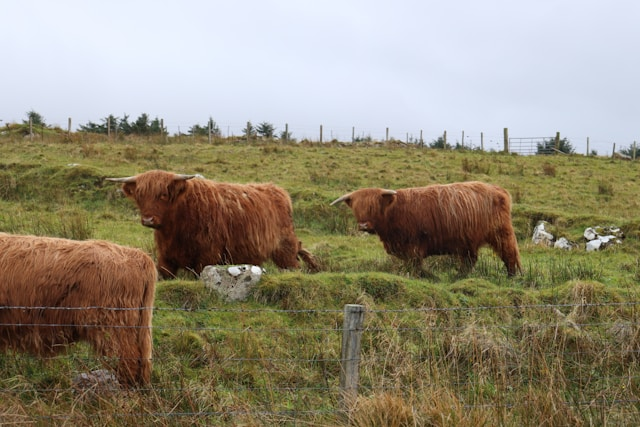
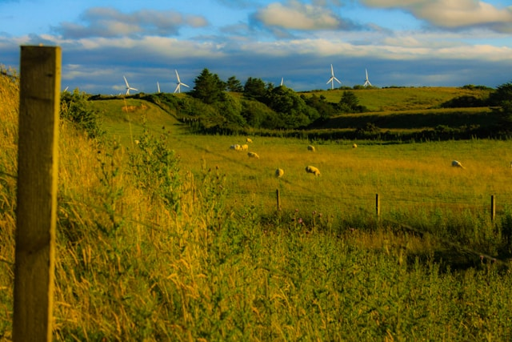

Outdoor Walks
Embark on a scenic journey through the natural wonders of our picturesque farm with our captivating outdoor walks. Immerse yourself in the tranquility of the countryside as you meander along winding paths, surrounded by lush greenery and breathtaking landscapes. Discover hidden gems such as tranquil ponds, quaint bridges, and enchanting woodlands teeming with wildlife. Whether you're seeking a leisurely stroll to unwind or an adventurous hike to explore, our diverse trails offer something for everyone to enjoy. Come experience the beauty of nature firsthand and create cherished memories on our idyllic farm walks.

